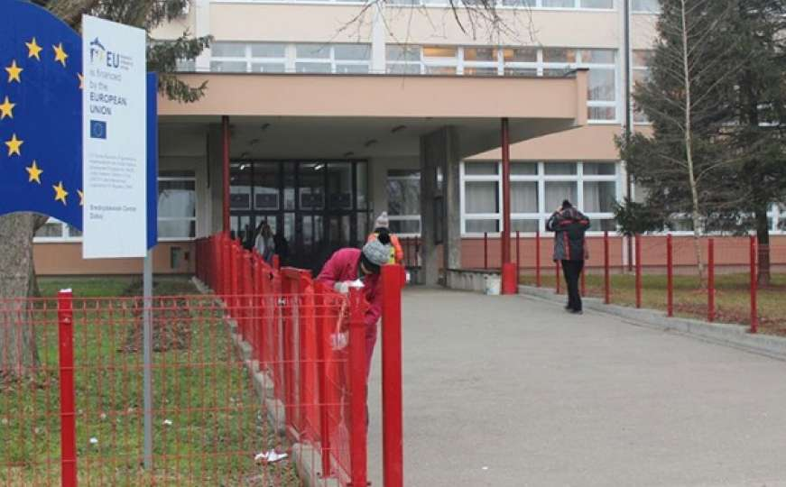

Srednjoškolski centar Doboj pruža različite obrazovne profile kao što su tehnički, ekonomski i zanatski smjerovi. Učenici imaju mogućnost da steknu praktična znanja koja im pomažu u zapošljavanju nakon završetka škole.
Škola je opremljena učionicama i radionicama gdje učenici mogu razvijati svoje vještine. Nastavnici se trude da učenicima prenesu znanje na zanimljiv i razumljiv način.